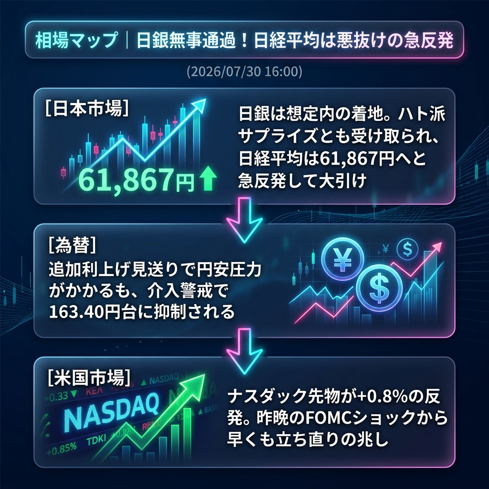

日銀の政策決定会合を無事に通過！結果は市場にとって「想定内の着地」あるいは「ハト派サプライズ」と受け取られ、日経平均は悪材料出尽くしから急速なショートカバー（買い戻し）を交えて61,867円へと急反発して大引けを迎えました。
為替市場では追加利上げ見送りによる円安圧力がかかったものの、強烈な介入警戒感が上値を抑え込み、163.40円台での推移にとどまっています。
「日銀無事通過による悪抜け急反発」と「米国株先物の立ち直り」。
日銀発表後、過度に怯えていた日本株市場は一気に安堵感に包まれました。さらに時間外の米ナスダック先物が+0.8%の強い反発を見せていることも追い風となり、CME日経先物は62,100円台まで大幅に回復。昨晩の「FOMCショック」による暴落を半分以上取り戻す強い動きとなっています。
ドル円は円安方向へ振れやすい材料でしたが、「ここで円安に振れたら100%介入が来る」という恐怖感が勝り、163.40円台に不気味にへばりついています。
| 指数・銘柄 | 現在値 | 前回比（前日比） | 騰落率 | 確認事項 |
|---|---|---|---|---|
| S&P 500 (ES=F) | 7,383.25 | +30.75 | +0.44% | 時間外で反発 |
| Nasdaq (NQ=F) | 27,564.75 | +224.25 | +0.81% | ハイテク株が自律反発 |
| Dow (YM=F) | 51,922.0 | +63.0 | +0.30% | 堅調に推移 |
| 日経225現物 | 61,867.43 | +433.24 | +0.71% | 日銀通過で大幅高引け |
| CME日経225先物 | 62,105.0 | +970.0 | +1.28% | 【急反発】朝の暴落から一転 |
| USD/JPY | 163.408 | +0.013 | +0.02% | 介入警戒で上値は重い |
| EUR/USD | 1.1465 | 0.0000 | 0.00% | ドル安一服 |
| 金 | 4,119.9 | -12.7 | -0.56% | 利食い売りが先行 |
| 原油 | 84.21 | -0.18 | -0.30% | 84ドル台で高止まり |
| BTCUSD | 64,491.92 | +544.19 | +0.92% | 株の反発に連動し上昇 |
日米のビッグイベント（FOMC、日銀）をすべて通過し、相場は「今夜の米経済指標（GDP速報値など）とメガテック決算の残り」に視線を移します。
欧州勢がこの「日経平均の悪抜け反発」を本物と見てさらに買い進めるか、それとも「戻り売り」の絶好の機会と捉えるかが焦点です。
今夜の米国市場オープン直後に、昨日急落したハイテク株が「やっぱり決算が物足りない」として再び売られ始めた場合。米国株の反発（自律反発）がダマシであったと判明し、日経先物も再び61,000円割れへと奈落の底へ叩き落とされるシナリオとなります。